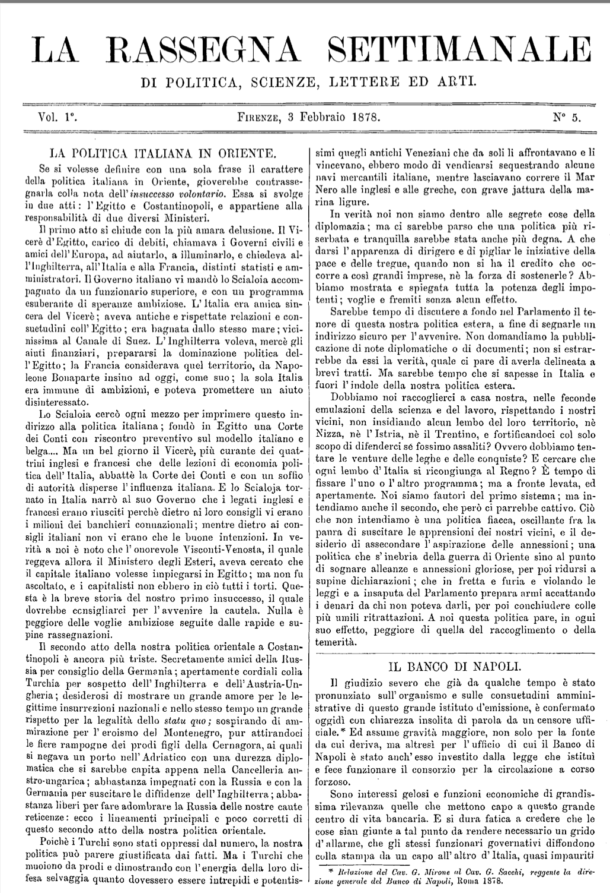
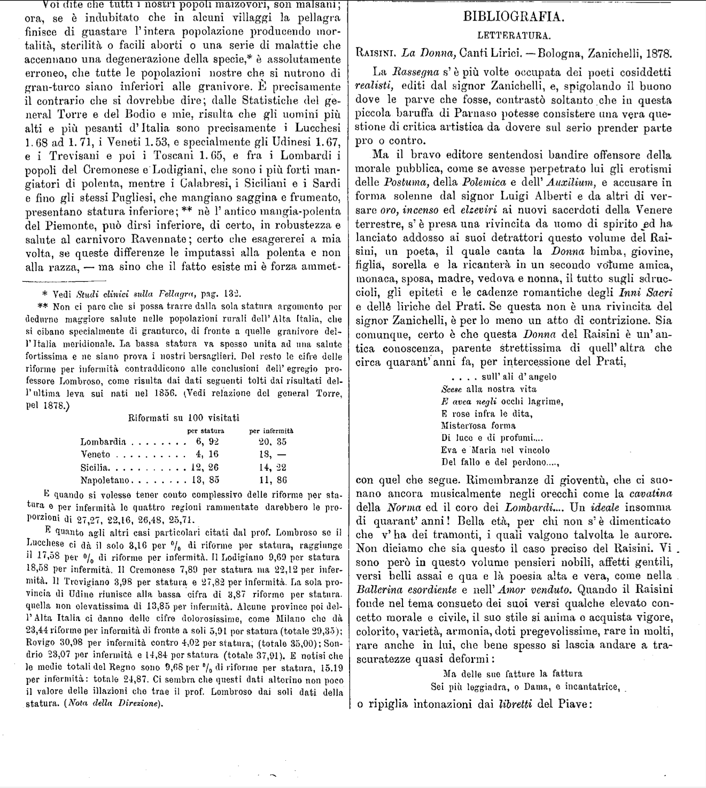
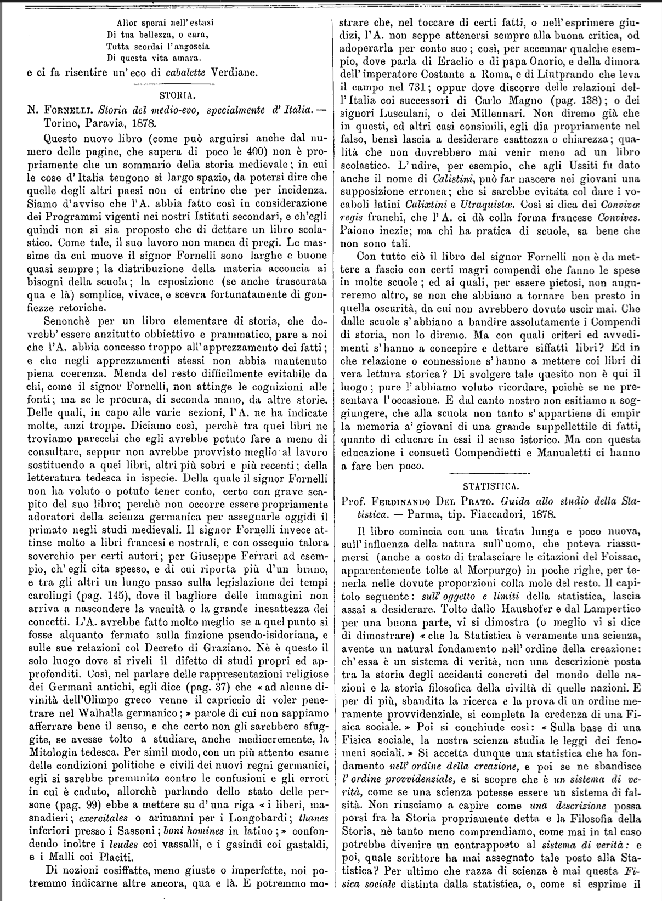
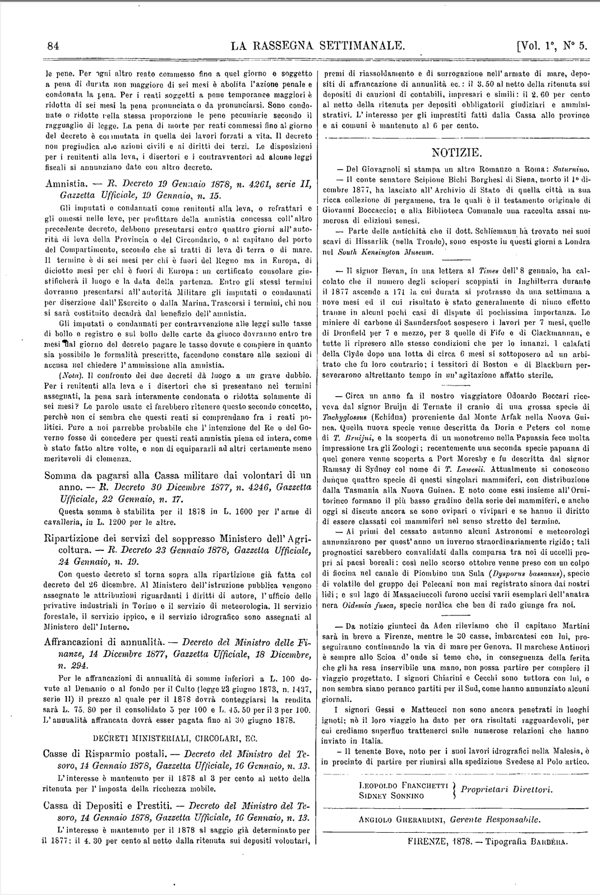

ARTICOLI

La Rassegna Settimanale
DI POLITICA,SCIENZE,LETTERE ED ARTI.
Vol.1 Firenze, 3 Febbraio 1878 N.5
LA POLITICA ITALIANA IN ORIENTE
Se si volesse definire con una sola frase il carattere
della politica italiana in Oriente, gioverebbe contrasse-
gnarla colla nota dell' insuccesso volontario . Essa si svolge
in due atti: l' Egitto e Costantinopoli, e appartiene alla
responsabilità di due diversi Ministeri.
Il primo atto si chiude con la più amara delusione. Il Vi-
cerè d' Egitto, carico di debiti, chiamava i Governi civili e
amici dell' Europa, ad aiutarlo, a illuminarlo, e chiedeva al-
l' Inghilterra, all' Italia e alla Francia, distinti statisti e am-
ministratori. Il Governo italiano vi mandò lo Scialoja accom-
pagnato da un funzionario superiore, e con un programma
esuberante di speranze ambiziose. L' Italia era amica sin-
cera del Vicerè; aveva antiche e rispettate relazioni e con-
suetudini coll' Egitto; era bagnata dallo stesso mare; vici-
nissima al Canale di Suez. L' Inghilterra voleva, mercé gli
aiuti finanziari, prepararsi la dominazione politica dell'
Egitto; la Francia considerava quel territorio, da Napo-
leone Bonaparte insino ad oggi, come suo; la sola Italia
era immune di ambizioni, e poteva promettere un aiuto
disinteressato.
Lo Scialoja cercò ogni mezzo per imprimere questo indir-
izzo alla politica italiana; fondò in Egitto una Corte
dei Conti con riscontro preventivo sul modello italiano e
belga... Ma un bel giorno il Vicerè, più curante dei quat-
trini inglesi e francesi che delle lezioni di economia poli-
tica dell' Italia, abbatte la Corte dei Conti e con un soffio
di autorità disperse l'influenza italiana. E lo Scialoja tor-
nato in Italia narrò al suo Governo che i legati inglesi e
francesi erano riusciti perché dietro i loro consigli vi erano
i milioni dei banchieri connazionali; mentre dietro ai con-
sigli italiani non vi erano che le buone intenzioni. In ve-
rità a noi è noto che l'onorevole Visconti-Venosta, il quale
reggeva allora il Ministero degli Esteri, aveva cercato che
il capitale italiano volesse impiegarsi in Egitto; ma non fu
ascoltato, e i capitalisti non ebbero in ciò tutti i torti. Que-
sta è la breve storia del nostro primo insuccesso, il quale
dovrebbe consigliarci per l'avvenire la cautela. Nulla è
peggiore delle voglie ambiziose seguite dalle rapide e su-
spine rassegnazioni.
Il secondo atto della nostra politica orientale a Costan-
tinopoli è ancora più triste . Secretamente amici della Rus-
sia per consiglio della Germania; apertamente cordiali con la
Turchia per sospetto dell' Inghilterra e dell' Austria-Ungheria;
desiderosi di mostrare un grande amore per le le-
gittime insurrezioni nazionali e nello stesso tempo un grande
rispetto per la legalità dello status quo; sospirando di am-
mirazione per l'eroismo del Montenegro , pur attirandoci
le fiere rampogne dei prodi figli della Cernagora, ai quali
si negava un porto nell' Adriatico con una durezza diplo-
matica che si sarebbe capita appena nella Cancelleria au-
stro-ungarica ; abbastanza impegnati con la Russia e con la
Germania per suscitare le diffidenze dell' Inghilterra; abba-
stanza liberi per fare adombrare la Russia delle nostre caute
reticenze: ecco i lineamenti principali e poco corretti di
questo secondo atto della nostra politica orientale.
Poichè i Turchi sono stati oppressi dal numero, la nostra
politica può parere giustificata dai fatti. Ma i Turchi che
muoiono da prodi e dimostrando con l' energia della loro di-
fesa selvaggia quanto dovessero essere intrepidi e potentis-
simi quegli antichi Veneziani che da soli li affrontavano e li
vincevano, ebbero modo di vendicarsi sequestrando alcune
navi mercantili italiane, mentre lasciavano correre il Mar
Nero alle inglesi e alle greche, con grave iattura della ma-
rina ligure.
In verità noi non siamo dentro alle segrete cose della
diplomazia; ma ci sarebbe parso che una politica più ri-
serbata e tranquilla sarebbe stata anche più degna. A che
darsi l'apparenza di dirigere e di pigliar le iniziative della
pace e delle tregue, quando non si ha il credito che oc-
corre a così grandi imprese, nè la forza di sostenerle? Ab-
biamo mostrata e spiegata tutta la potenza degli impo-
tenti; voglie e fremiti senza alcun effetto.
Sarebbe tempo di discutere a fondo nel Parlamento il te-
nore di questa nostra politica estera, a fine di segnarle un
indirizzo sicuro per l'avvenire. Non domandiamo la pubbli-
cazione di note diplomatiche o di documenti; non si estrar-
rebbe da essi la verità, quale ci pare di averla delineata a
brevi tratti. Ma sarebbe tempo che si sapesse in Italia e
fuori l'indole della nostra politica estera.
Dobbiamo noi raccoglierci a casa nostra, nelle feconde
emulazioni della scienza e del lavoro, rispettando i nostri
vicini, non insidiando alcun lembo del loro territorio, nè
Nizza, nè l' Istria, nè il Trentino, e fortificandoci col solo
scopo di difenderci se fossimo assaliti? Ovvero dobbiamo ten-
tare le venture delle leghe e delle conquiste? E cercare che
ogni lembo d' Italia si ricongiunga al Regno? E tempo di
fissare l'uno o l'altro programma; ma a fronte levata, ed
apertamente. Noi siamo fautori del primo sistema; ma in-
tendzamo anche il secondo, che però ci parrebbe cattivo. Ciò
che non intendiamo è una politica fiacca, oscillante fra la
paura di suscitare le apprensioni dei nostri vicini, e il de-
siderio di assecondare l' aspirazione delle annessioni : una
politica che s'inebria della guerra di Oriente sino al punto
di sognare alleanze e annessioni gloriose, per poi ridursi a
supine dichiarazioni; che in fretta e furia e violando le
leggi e a insaputa del Parlamento prepara armi accattando
i denari da chi non poteva darli, per poi conchiudere colle
più umili ritrattazioni. A noi questa politica pare, in ogni
suo effetto, peggiore di quella del raccoglimento o della
temerità.

La Rassegna Settimanale
DI POLITICA, SCIENZE, LETTERE ED ARTI.
Vol.2° Firenze, 7 luglio 1878. N.1°
GUIDO PADELLETTI.
Ci giunge la dolorosa notizia che il dì 3 luglio ha ces-
sato di vivere in Montalcino il prof. Guido Padelletti, no-
stro valentissimo collaboratore, nella età di 35 anni.
La sua perdita sarà vivamente sentita dai cultori delle
discipline giuridiche e sociali, nelle quali l’amico nostro era
eccellente. Costretti per l’angustia del tempo a prendere
per sola guida le nostre reminiscenze, ci riesce impossibile
porgere alla cara memoria dell’ amico estinto quel largo e
sincero tributo di lode che pochi hanno più di lui me-
ritato.
Nondimeno ricorderemo come giovanissimo ancora ri-
chiamasse su di sè l’attenzione colla sua Teoria delle ele-
zioni politiche , opera premiata dalla R. Accademia di Scienze
Morali e Politiche di Napoli e nella quale già si annun-
ziava lo scrittore coscienzioso ed acuto. Dopo avere com-
piuti i suoi studi in Germania entrò nell’insegnamento,
e nel giro di pochi anni passò dalla Università di Perugia
a quella di Pavia, poi a quella di Bologna e finalmente a
quella di Roma, dove la gioventù studiosa ricorderà lunga-
mente il valente insegnante che 1’ ammaestrava con tanta
sapienza e con tanto affetto nella storia del Diritto.
I suoi articoli pubblicati nella Nuova Antologia sulle
questioni elettorali e sulla formula Cavouriana :
« liberaquelli che videro la luce nell’ Ar-
Chiesa in libero Stato;»
chivio Storico, nell’ Archivio Giuridico e in altre riviste no-
stre e straniere, e finalmente il suo Manuale di Storia del
Diritto Romano (del qual libro parlammo ampiamente nel
nostro n° 12, vol. I, pag. 223 ), sono là ad attestare l’ inge-
gno elevato ed eminentemente critico dell’ A., la sua vasta
erudizione e una operosità mirabile, da cui non potè per
un momento distoglierlo il morbo terribile che da parecchi
anni gli andava scavando lentamente la fossa.
Alla profondità dei concetti aggiungeva pregio la forma
semplice ed elegante. Di questo suo gusto letterario fa
prova, fra gli altri, 1’ articolo da noi pubblicato intorno ad
un viaggio in Grecia.* Con facilità e felicità singolari
scrisse articoli in francese e in tedesco, ed il suo nome
godeva meritata reputazione anche al di là delle Alpi.
E poiché giova non disgiungere 1’ uomo dallo scrittore,
ci piace dire come 1’ uno non discordasse dall’ altro. Animo
nobile, generoso, schietto , queste qualità si riflettono nei
suoi scritti. Devoto alla verità, disse sempre recisamente
la sua opinione, e parlando degli altri ignorò del pari le
accuse velenose e le adulazioni compiacenti, dando, in ogni
occasione, prova di civile coraggio, dote pur troppo rara
a’ dì nostri.
LE REGIONI NEL PARLAMENTO.
Da qualche tempo a questa parte le notizie parlamen-
tari ravvivano il ricordo doloroso degli Stati e delle re-
gioni in cui era divisa l’ Italia prima del 1859.
Un giorno le gazzette ci informano che il tal Ministero
non può trovare un segretario generale nella Camera , per-
chè si vuol nominare un siciliano ; l’indomani, che il Mi-
nistero sta trattando con la deputazione sarda e con quella
siciliana per ottenere che consentano ad una transazione
sul modo di operare la diminuzione dell’ imposta sul maci-
nato. D’altra parte si annunzia che la deputazione piemontese
preme sul Ministero per ottenere la nomina del tal di tale
alla prefettura di Torino ; oppure che i deputati toscani si
sono adunati per sollecitare collegialmente dal Governo che
provveda d’ urgenza ai bisogni di Firenze e a quelli della
Banca Toscana.
Non torneremo ora a ripetere tutte le gravi ragioni di
ordine costituzionale, che rendono esiziali alle istituzioni
rappresentative alcune di queste immistioni dei deputati
nel governo diretto del paese ; * ma ci domandiamo con
sgomento se, seguitando di questo passo, tra poco si tro-
veranno ancora in Parlamento dei deputati italiani.
BIBLIOGRAFIE

BIBLIOGRAFIA.
LETTERATURA.
Raisini. La Donna, Canti Lirici.— Bologna, Zanichelli , 1878.
La Rassegna s’ è più volte occupata dei poeti cosiddetti
realisti, editi dal signor Zanichelli, e, spigolando il buono
dove le parve che fosse, contrastò soltanto che in questa
piccola baruffa di Parnaso potesse consistere una vera que-
stione di critica artistica da dovere sul serio prender parte
pro o contro.
Ma il bravo editore sentendosi bandire offensore della
morale pubblica, come se avesse perpetrato lui gli erotismi
delle Postuma, della Polemica e dell’ Auxilium, e accusare in
forma solenne dal signor Luigi Alberti e da altri di ver-
sare oro, incenso ed elzeviri ai nuovi sacerdoti della Venere
terrestre, s’ è presa una rivincita da uomo di spirito ^ed ha
lanciato addosso ai suoi detrattori questo volume del Rai-
sini, un poeta, il quale canta la Donna bimba, giovine,
figlia, sorella e la ricanterà in un secondo volume amica,
monaca, sposa, madre, vedova e nonna, il tutto sugli sdruc-
cioli, gli epiteti e le cadenze romantiche degli Inni Sacri
e dellè liriche del Prati. Se questa non è una rivincita del
signor Zanichelli, è per lo meno un atto di contrizione. Sia
comunque, certo è che questa Donna del Raisini è un’ an-
tica conoscenza , parente strettissima di quell’ altra che
circa quarant’ anni fa, per intercessione del Prati,
. . . . sull’ ali d’ angelo
Scese alla nostra vita
E avea negli occhi lagrime,
E rose infra le dita,
Misteriosa forma
Di luce e di profumi....
Èva e Maria nel vincolo
Del fallo e del perdono....,
con quel che segue. Rimembranze di gioventù, che ci suo-
nano ancora musicalmente negli orecchi come la cavatina
della Norma ed il coro dei Lombardi.... Un ideale insomma
di quarant’ anni ! Bella età, per chi non s’è dimenticato
che v’ ha dei tramonti, i quali valgono talvolta le aurore.
Non diciamo che sia questo il caso preciso del Raisini. Vi
sono però in questo volume pensieri nobili, affetti gentili,
versi belli assai e qua e là poesia alta e vera, come nella
Ballerina esordiente e nell’ Amor venduto. Quando il Raisini
fonde nel tema consueto dei suoi versi qualche elevato con-
cetto morale e civile, il suo stile si anima e acquista vigore,
colorito, varietà, armonia, doti pregevolissime, rare in molti,
rare anche in lui, che bene spesso si lascia andare a tra-
scuratezze quasi deformi :
Ma delle sue fatture la fattura
Sei più leggiadra, o Dama, e incantatrice,
o ripiglia intonazioni dai libretti del Piave:

Allor sperai nell’ estasi
Di tua bellezza, o cara,
Tutta scordai l’angoscia
Di questa vita amara.
e ci fa risentire un’eco di cabalette Verdiane.
STORIA.
N. Fornelli. Storia del medio-evo, specialmente d’Italia.—
Torino, Paravia, 1878.
Questo nuovo libro (come può arguirsi anche dal nu-
mero delle pagine, che supera di poco le 400) non è pro-
priamente che un sommario della storia medievale ; in cui
le cose d’ Italia tengono sì largo spazio, da potersi dire che
quelle degli altri paesi non ci entrino che per incidenza.
Siamo d’avviso che l’A. abbia fatto così in considerazione
dei Programmi vigenti nei nostri Istituti secondari, e ch’egli
quindi non si sia proposto che di dettare un libro scola-
stico. Come tale, il suo lavoro non manca di pregi. Le mas-
sime da cui muove il signor Fornelli sono larghe e buone
quasi sempre ; la distribuzione della materia acconcia ai
bisogni della scuola ; la esposizione (se anche trascurata
qua e là) semplice, vivace, e scevra fortunatamente di gon-
fiezze retoriche.
Senonchè per un libro elementare di storia, che do-
vrebb’ essere anzitutto obbiettivo e prammatico, pare a noi
che l’A. abbia concesso troppo all’apprezzamento dei fatti;
e che negli apprezzamenti stessi non abbia mantenuto
piena coerenza. Menda del resto difficilmente evitabile da
chi, come il signor Fornelli, non attinge le cognizioni alle
fonti; ma se le procura, di seconda mano, da altre storie.
Delle quali, in capo alle varie sezioni, l’A. ne ha indicate
molte, anzi troppe. Diciamo così, perchè tra quei libri ne
troviamo parecchi che egli avrebbe potuto fare a meno di
consultare, seppur non avrebbe provvisto meglio al lavoro
sostituendo a quei libri, altri più sobri e più recenti ; della
letteratura tedesca in ispecie. Della quale il signor Fornelli
non ha voluto o potuto tener conto, certo con grave sca-
pito del suo libro; perchè non occorre essere propriamente
adoratori della scienza germanica per assegnarle oggidì il
primato negli studi medievali. Il signor Fornelli invece at-
tinse molto a libri francesi e nostrali, e con ossequio talora
soverchio per certi autori; per Giuseppe Ferrari ad esem-
pio, ch’egli cita spesso, e di cui riporta più d’un brano,
e tra gli altri un lungo passo sulla legislazione dei tempi
carolingi (pag. 145), dove il bagliore delle immagini non
arriva a nascondere la vacuità o la grande inesattezza dei
concetti. L’A. avrebbe fatto molto meglio se a quel punto si
fosse alquanto fermato sulla finzione pseudo-isidoriana, e
sulle sue relazioni col Decreto di Graziano . Nè è questo il
solo luogo dove si riveli il difetto di studi propri ed ap-
profonditi. Così, nel parlare delle rappresentazioni religiose
dei Germani antichi, egli dice (pag. 37) che
« ad alcune di-parole di cui non sappiamo
vinità dell’ Olimpo greco venne il capriccio di voler pene-
trare nel Walhalla germanico ; »
afferrare bene il senso, e che certo non gli sarebbero sfug-
gite, se avesse tolto a studiare, anche mediocremente, la
Mitologia tedesca. Per simil modo, con un più attento esame
delle condizioni politiche e civili dei nuovi regni germanici,
egli si sarebbe premunito contro le confusioni e gli errori
in cui è caduto, allorché parlando dello stato delle per-
sone (pag. 99) ebbe a mettere su d’ una riga
« i liberi, ma-confon-
snadieri ; exercitales o arimanni per i Longobardi ; thanes
inferiori presso i Sassoni ; boni homines in latino ; »
dendo inoltre i lendes coi vassalli, e i gasindi coi gastaldi,
e i Malli coi Placiti.
Di nozioni cosiffatte, meno giuste o imperfette, noi potremmo
indicarne altre ancora, qua e là. E potremmo mo-
strare che, nel toccare di certi fatti, o nell’ esprimere giu-
dizi, l’A. non seppe attenersi sempre alla buona critica, od
adoperarla per conto suo ; così, per accennar qualche esem-
pio, dove parla di Eraclio e di papa Onorio, e della dimora
dell’ imperatore Costante a Roma, e di Liutprando che leva
il campo nel 731 ; oppur dove discorre delle relazioni del-
l’ Italia coi successori di Carlo Magno (pag. 138) ; o dei
signori Lusculani, o dei Millennari. Non diremo già che
in questi, ed altri casi consimili, egli dia propriamente nel
falso, bensì lascia a desiderare esattezza o chiarezza ; qua-
lità che non dovrebbero mai venir meno ad un libro
scolastico. L’udire, per esempio, che agli Ussiti fu dato
anche il nome di Calistini, può far nascere nei giovani una
supposizione erronea; che si sarebbe evitata col dare i vo-
caboli latini Calixtini e Utraquistœ. Così si dica dei Conviva
regis franchi, che l’A. ci dà colla forma francese Convives.
Paiono inezie; ma chi ha pratica di scuole, sa bene che
non sono tali.
Con tutto ciò il libro del signor Fornelli non è da met-
tere a fascio con certi magri compendi che fanno le spese
in molte scuole; ed ai quali, per essere pietosi, non augu-
reremo altro, se non che abbiano a tornare ben presto in
quella oscurità, da cui non avrebbero dovuto uscir mai. Che
dalle scuole s’ abbiano a bandire assolutamente i Compendi
di storia, non lo diremo. Ma con quali criteri ed avvedi-
menti s’hanno a concepire e dettare siffatti libri? Ed in
che relazione o connessione s’ hanno a mettere coi libri di
vera lettura storica ? Di svolgere tale quesito non è qui il
luogo ; pure 1’ abbiamo voluto ricordare, poiché se ne pre-
sentava l’occasione. E dal canto nostro non esitiamo a sog-
giungere, che alla scuola non tanto s’ appartiene di empir
la memoria a’ giovani di una grande suppellettile di fatti,
quanto di educare in essi il senso istorico. Ma con questa
educazione i consueti Compendietti e Manualetti ci hanno
a fare ben poco.
NOTIZIE

NOTIZIE.
— Del Giovagnoli si stampa un altro Romanzo a Roma: Saturnino.
— Il conte senatore Scipione Bichi Borghesi di Siena, morto il 1° di-
cembre 1877 , ha lasciato all’ Archivio di Stato di quella città la sua
ricca collezione di pergamene, tra le quali è il testamento originale di
Giovanni Boccaccio; e alla Biblioteca Comunale una raccolta assai nu-
merosa di edizioni senesi.
- Parte delle antichità che il dott. Schliemann ha trovato nei suoi
scavi di Hissarlik (nel Troade), sono esposte in questi giorni a Londra
nel South Kensington Museum.
- Il signor Bevan, in una lettera al Times dell' 8 gennaio, ha cal-
colato che il numero degli scioperi scoppiati in Inghilterra durante
il 1877 ascende a 171 la cui durata si protrasse da una settimana a
a nove mesi ed il cui risultato è stato generalmente di niuno effetto
tranne in alcuni pochi casi di dispute di pochissima importanza. Le
miniere di carbone di Saundersfoot sospesero i lavori per 7 mesi, quelle
di Dronfield per 7 e mezzo, per 8 quelle di Fife e di Clackmannan, e
tutte li ripresero alle stesse condizioni che per lo innanzi. I calafati
della Clyde dopo una lotta di circa 6 mesi si sottoposero ad un arbi-
trato che fu loro contrario; i tessitori di Boston e di Blackburn per-
severanono altrettanto tempo in un'agitazione affatto sterile.
INFORMAZIONI
Edizione digitale
Progetto sotto la guida di: Angelo Mario Del Grosso
Codifica realizzata da: Matteo Cipolli, Luca Loi
Pubblicato da: Università di Pisa
Data: Dicembre 2024
Disponibilità: Limitata
Fonte Bibliografica
Titolo: Rassegna settimanale di Politica, Scienze, Lettere ed Arti
Fondatori: Leopoldo Franchetti , Sidney Sonnino
Luogo di pubblicazione: Firenze
Data di pubblicazione: 6 gennaio 1878 - 29 gennaio 1882
Lingua: Italiano
Tipo di pubblicazione: settimanale
Numero di riviste pubblicate: 213
Autori che hanno preso parte alla rivista:
- Pasquale Villari
- Luigi Masi
- Aleksandr Aleksandrovič Herzen
- Alessandro D'Ancona
- Domenico Comparetti
- Renato Fucini
- Ferdinando Martini
- Pompeo Gherardo Molmenti
- Adolfo Bartoli
- Ruggiero Bonghi
- Giustino Fortunato
- Giacomo Barzellotti
- Giovanni Verga